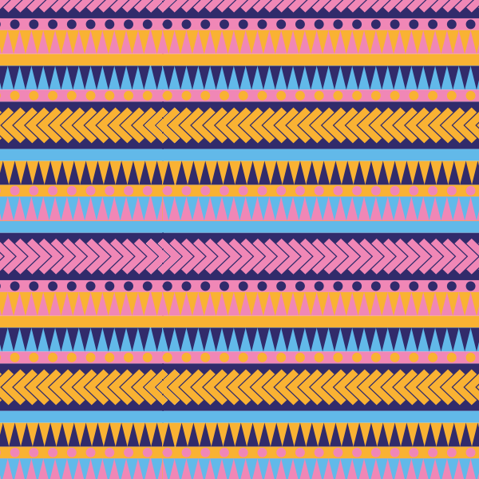

Desperados
(projet étudiant)
Le Collectif PK est une agence de communication marketing et numérique basée à Tahiti. L'équipe se compose d'un groupe d'amis ayant chacun des compétences dans différents domaines créatifs. Le collectif propose ses services pour de la création d'identité visuelle, du web design, de la photo et de la vidéo, de la programmation ou encore du community management.
-
Collectif PK is a marketing and digital communication agency based in Tahiti. The team consists of a group of friends each with skills in different creative fields. The collective offers its services for the creation of visual identity, web design, photo and video, programming or even community management.


Project
- Research


Colors
- Main Colors
bleu
céruléenRVB 98 / 184 / 232
CMJN 60 / 10 / 0 / 0
Hexa #62B8E8
Pantone 299 C
rose
RVB 242 / 158 / 196
CMJN 0 / 50 / 0 / 0
Hexa #F29EC4
Pantone 223 C
bleu
nuitRVB 48 / 43 / 107
CMJN 100 / 100 / 30 / 0
Hexa #302B6B
Pantone 2758 C
bière
Patterns


- 


 Back to Top
Back to Top